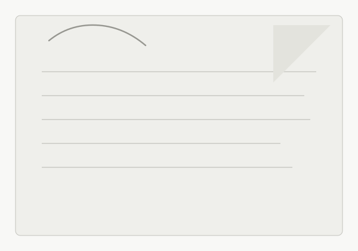

Monthly Diary
2026.07.03
猫も歩けば魚に当たる。テスト日記だよ
2026.07.02
画像も置ける形を試すための投稿。文章だけのメモと混ざっても重たく見えすぎないように、余白を多めに取ったカードにしている。

2026.07.01
更新記録というより、その日の断片を一枚ずつ残す棚として運用したい。あとで見返したときに、その月の空気だけが薄く残っていれば十分かもしれない。